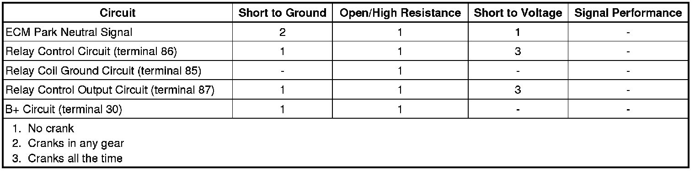

Starter Solenoid Does Not Click
Starter Solenoid Does Not Click
Diagnostic Instructions
* Perform the Diagnostic System Check - Vehicle (Initial Inspection and Diagnostic Overview) prior to using this diagnostic procedure.
* Review Strategy Based Diagnosis (Initial Inspection and Diagnostic Overview) for an overview of the diagnostic approach.
* Diagnostic Procedure Instructions (Initial Inspection and Diagnostic Overview) provides an overview of each diagnostic category.
Diagnostic Fault Information

Circuit/System Description
When the ignition switch is placed in the START position, a discrete signal is supplied to the body control module (BCM) notifying it that the ignition is in the START position. The BCM then sends a message to the engine control module (ECM) that crank has been requested. The ECM then verifies that the transmission is in Park or Neutral. If it is, the ECM then supplies 12 volts to the control circuit of the crank relay. When this occurs, battery voltage is supplied through the switch of the crank relay to S terminal of the starter solenoid.
Reference Information
Schematic Reference
Starting and Charging Schematics ([1][2]Electrical Diagrams)
Connector End View Reference
Component Connector End Views (Connector Views)
Description and Operation
Starting System Description and Operation (Description and Operation)
Electrical Information Reference
* Circuit Testing (Component Tests and General Diagnostics)
* Connector Repairs (Component Tests and General Diagnostics)
* Testing for Intermittent Conditions and Poor Connections (Component Tests and General Diagnostics)
* Wiring Repairs (Component Tests and General Diagnostics)
Scan Tool Reference
Control Module References (Programming and Relearning) for scan tool information
Circuit/System Verification
1. Ignition ON, verify that no starter relay, theft deterrent, or automatic transmission DTCs are set that would cause the ECM to disable starting.
• If DTCs are set, refer to Diagnostic Trouble Code (DTC) List - Vehicle (Diagnostic Trouble Code Descriptions) .
2. Ignition ON, observe the scan tool BCM Current Power Mode parameter. Place ignition switch in the crank position, the parameter should display Crank Request.
• If not the specified value, refer to Power Mode Mismatch (Power Mode Mismatch) .
3. Transmission range selector in park , verify the scan tool ECM PNP Switch and TCM IMS parameters display Park/Neutral.
• If the TCM IMS parameter does not indicate Park/Neutral. Refer to Transmission Internal Mode Switch Logic (Transmission Internal Mode Switch Logic) for the 5L40/5L50 transmission. or Transmission Internal Mode Switch Logic (Transmission Internal Mode Switch Logic) for the 6L50/6L80/6L90 transmission.
• If the ECM Park/Neutral parameter does not indicate Park/Neutral. Refer to ECM Park Switch Circuit Malfunction.
4. Transmission range selector in park or neutral, attempt to start the vehicle. The starter relay should click and the engine should begin cranking.
• If the crank relay does not click or the engine does not crank, refer to Starter Relay Circuit Malfunction.
Circuit/System Testing
ECM Park Switch Circuit Malfunction (5L40/5L50 or 6L50/6L80/6L90)
1. Ignition OFF, disconnect the harness connector at the AT Inline 20-Way (5L40/5L50) or the 16-Way (6L50/6L80/6L90) connector at the transmission.
2. Ignition ON, install a 3A fused jumper wire between the signal circuit terminal 2 (5L40/5L50) or terminal 3 (6L50/6L80/6L90) and ground. Verify the scan tool ECM PNP switch parameter displays Park/Neutral.
• If not the specified value, test the signal circuit for an open/high resistance. If the circuit tests normal, replace the ECM.
3. If all circuits test normal, test or replace the internal mode switch (IMS).
Starter Relay Circuit Malfunction
1. Ignition OFF, disconnect the starter relay.
2. Test for less than 1 ohm of resistance between the ground circuit terminal 85 and ground.
• If greater than the specified range, test the ground circuit for an open/high resistance.
3. Ignition ON, verify a test lamp illuminates between the relay switch B+ circuit terminal 30 and ground.
• If the test lamp does not illuminate, test the B+ circuit for a short to ground or an open/high resistance.
4. Ensure the parking brake is applied and the transmission is in PARK. Momentarily install a 40A fused jumper wire between the B+ circuit terminal 30 and the control output circuit terminal 87. The starter solenoid should engage and the engine should begin cranking.
• If the solenoid does not engage, test the control output circuit for a short to ground or an open/high resistance. If the circuit tests normal, test or replace the starter motor.
5. Connect a test lamp between the coil control circuit terminal 86 and the coil ground circuit terminal 85.
6. With the transmission range selector in park or neutral, cycle the ignition between the OFF and CRANK position. The test lamp should turn ON and OFF when changing between the commanded states.
• If the test lamp is always ON, test the control circuit for a short to voltage. If the circuit tests normal, replace the ECM.
• If the test lamp is always OFF, test the control circuit for a short to ground or an open/high resistance. If the circuit tests normal, replace the ECM.
7. If all circuits test normal, test or replace the starter relay.
Component Testing
1. Ignition OFF, disconnect the starter relay.
2. Test for 60-180 ohms of resistance between terminals 85 and 86.
• If the resistance is not within the specified range, replace the relay.
3. Test for infinite resistance between the following terminals:
* 30 and 86
* 30 and 87
* 30 and 85
* 85 and 87
• If not the specified value, replace the relay.
4. Install a 20A fused jumper wire between terminal 85 and 12 volts. Install a jumper wire between terminal 86 and ground. Test for less than 2.0 ohms of resistance between terminals 30 and 87.
• If greater than the specified range, replace the relay.
Repair Instructions
Perform the Diagnostic Repair Verification (Verification Tests) after completing the diagnostic procedure.
* Relay Replacement (Attached to Wire Harness) (Relay Replacement (Attached to Wire Harness))Relay Replacement (Within an Electrical Center) (Relay Replacement (Within an Electrical Center))
* Manual Shift Shaft Position Switch Replacement (5L40-E/5L50-E - Automatic Transmission) for the 5L40/5L50 transmission. or Manual Shift Shaft Position Switch Replacement (6L50/6L80/6L90 - Automatic Transmission) for the 6L50/6L80/6L90 transmission.
* Starter Motor Replacement (LY7 - Gas, 6 Cylinder, 3.6L, SFI, V6) (Service and Repair)Starter Motor Replacement (LH2 - Gas, 8 Cylinder, 4.6L, SFI, V8, DOHC, HO) (Service and Repair)
* Control Module References (Programming and Relearning) for ECM replacement, setup and programming